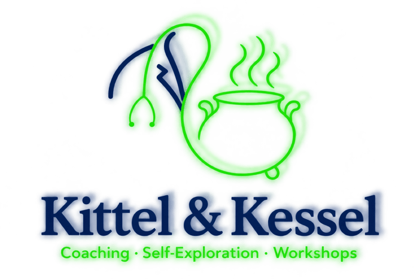

Dr.medic/ UMF Bukarest Oana Walther
Medic specialist în medicină psihosomatică și psihoterapie

În activitatea mea medicală și psihoterapeutică mă preocupă interacțiunea dintre trăirea corporală, emoții și poveștile personale de viață. Am lucrat mai mulți ani în clinici psihosomatice de reabilitare, cel mai recent ca medic-șef al unei clinici psihosomatice. Astăzi lucrez în cabinet propriu, în zona Regensburg.
Prin Kittel & Kessel deschid un spațiu pentru autocunoaștere și autoreflecție. Experiența mea profesională se reflectă în felul în care te însoțesc. În centru se află propriile tale percepții, întrebări și experiențe.
Atelierele „Arhetipuri în dialog“ și „Constelații ale simptomelor“ oferă abordări diferite pentru a explora teme personale și a dezvolta perspective noi.